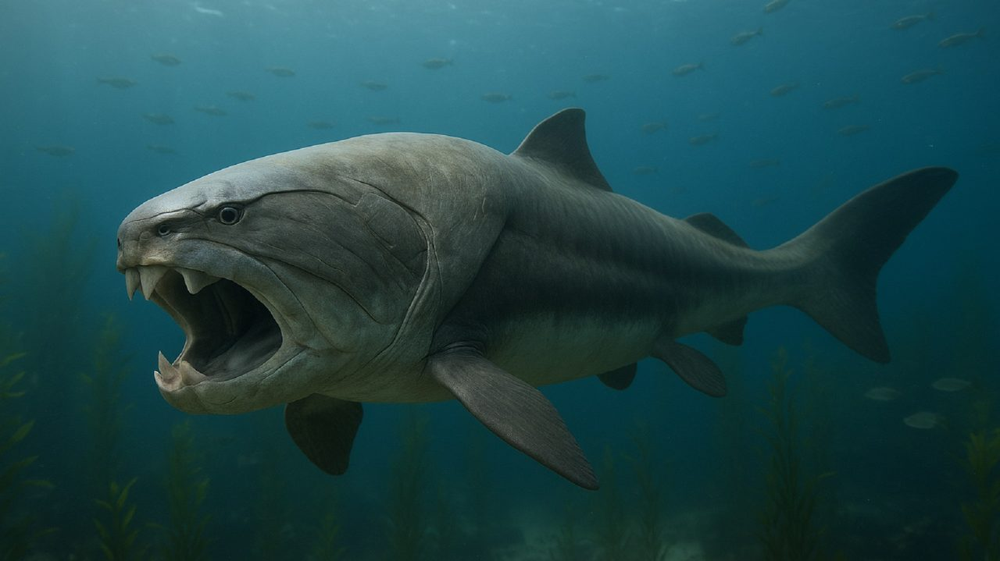
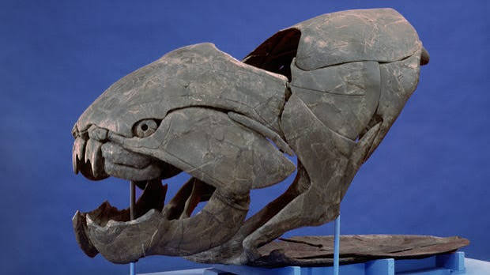
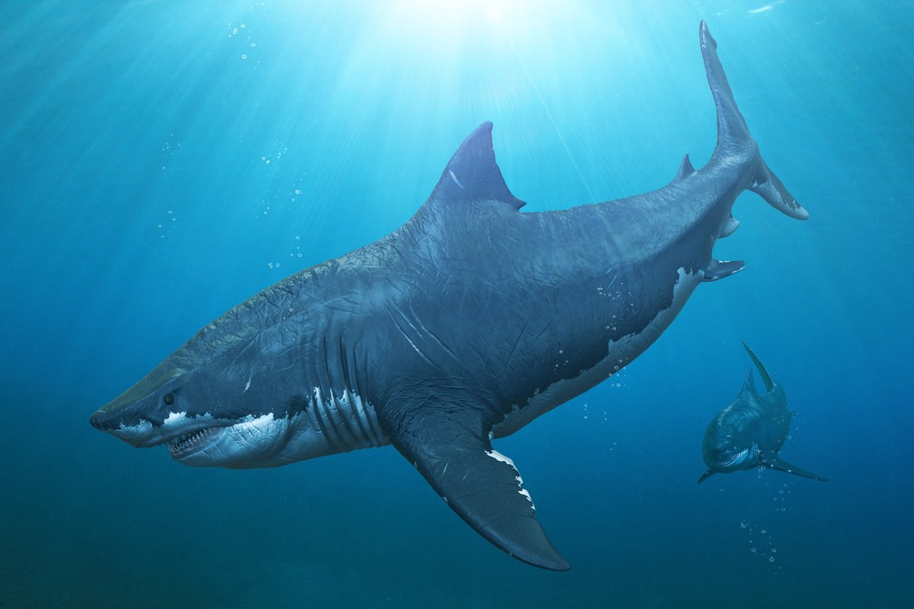
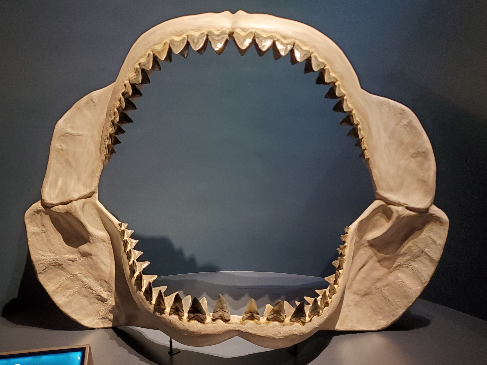
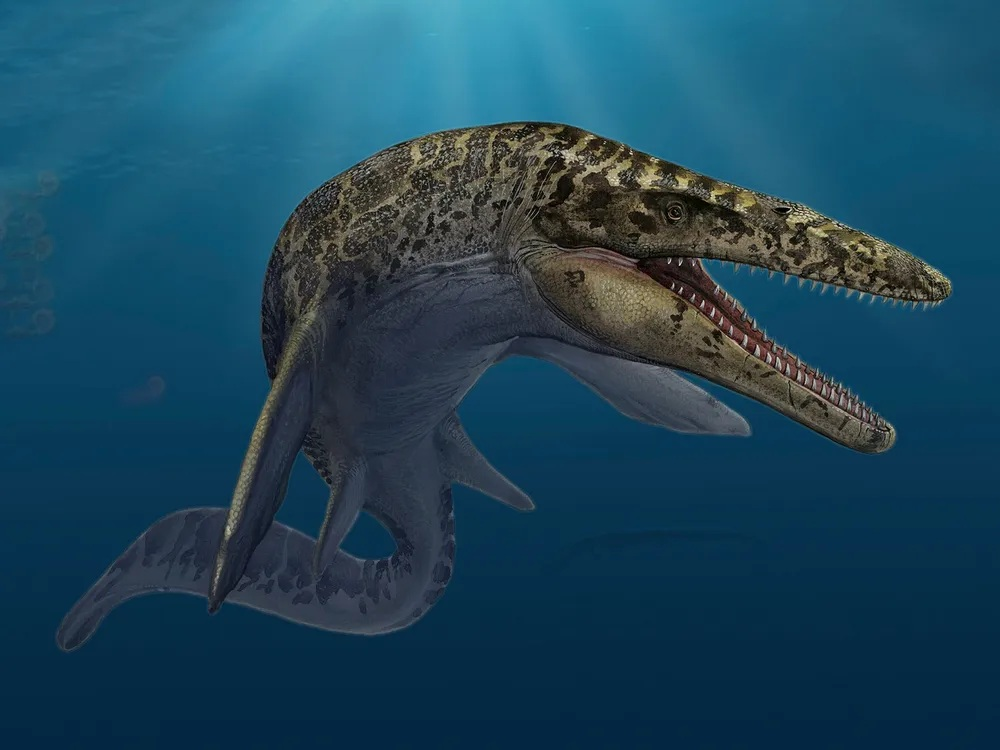
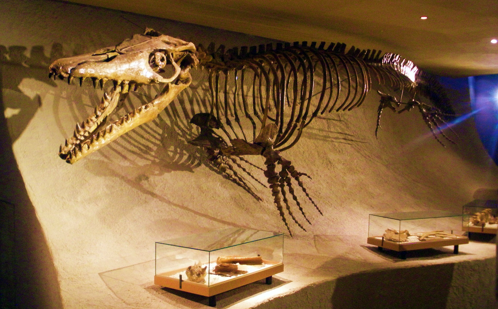
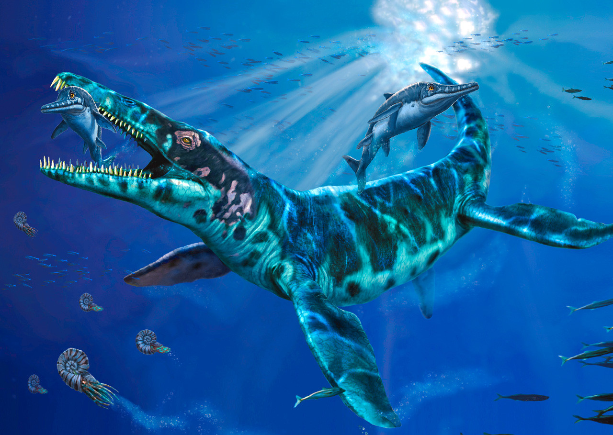
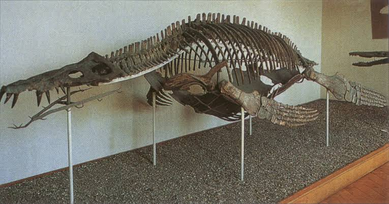
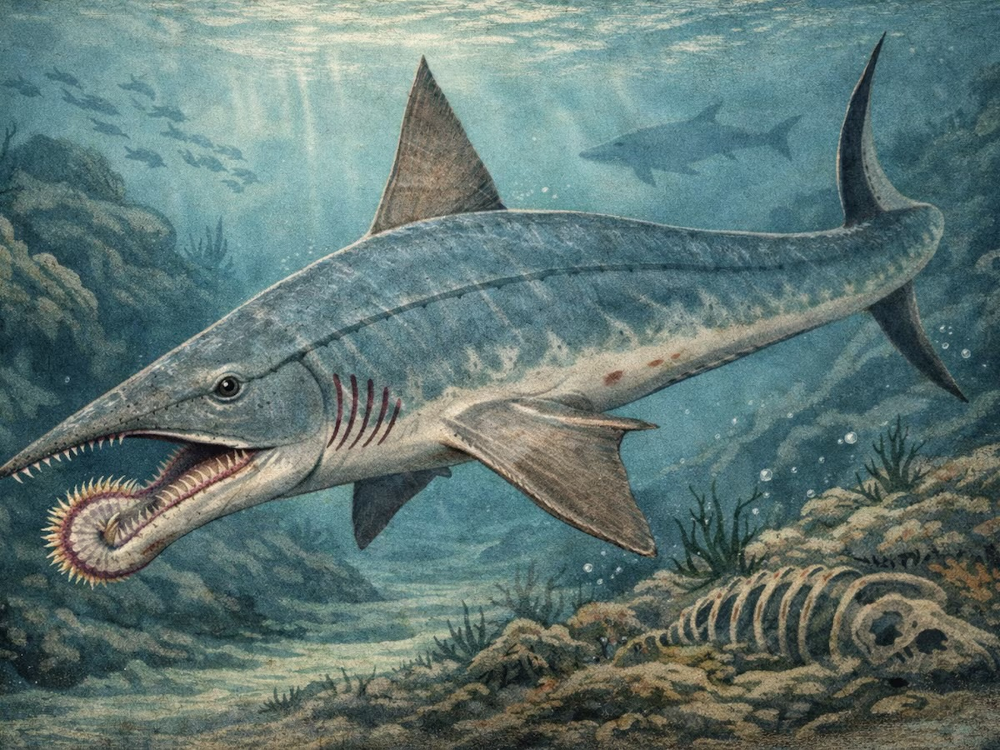
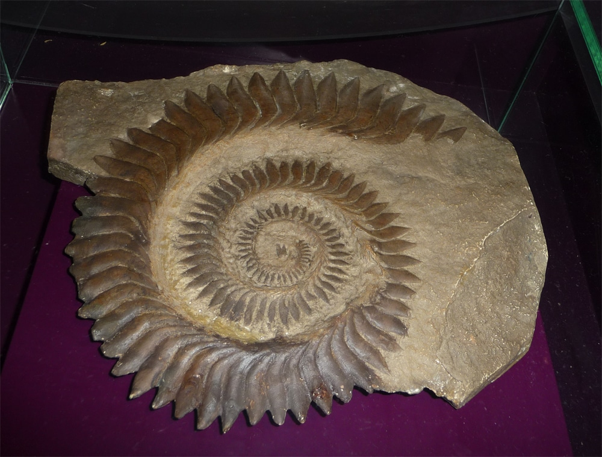

1.Dunkleosteus
วิวัฒนาการ : ประมาณ 380 - 360 ล้านปีก่อน
ยุคที่ถือกำเนิด : เดโวเนียน (Devonian)
บรรพบุรุษ/กลุ่มสายพันธุ์ : ปลาในกลุ่ม Placodermi (พลาโคเดอร์ไม - ปลามีเกราะ)
ลักษณะและความน่าทึ่ง : หนึ่งในสัตว์ล่าเหยื่อที่น่ากลัวที่สุดในยุคโบราณ ลำตัวยาวได้ถึง 9 - 10 เมตร และหนักกว่า 4 ตัน ส่วนหัวและอกปกคลุมด้วย "แผ่นเกราะกระดูกหนา" คล้ายรถหุ้มเกราะ ความน่าทึ่งที่สุดคือ มันไม่มีฟันแท้จริง แต่ส่วนขอบของเกราะกระดูกบริเวณคมปากได้วิวัฒนาการกลายเป็น "แผ่นกระดูกแหลมคม" ที่ทำงานเหมือนกรรไกรตัดเหล็ก ดังเคิลโอสเตียสสามารถอ้าปากได้เร็วมากในเวลาเพียง 1/50 ของวินาที เกิดเป็นแรงดูดมหาศาลดึงเหยื่อเข้าปาก และมีแรงกัดสูงถึง 5,000 นิวตัน ซึ่งเทียบเท่ากับแรงกัดของจระเข้น้ำเค็มยุคปัจจุบัน สามารถกัดกระดองของสัตว์อื่นขาดครึ่งได้อย่างสบาย


2.Megalodon
วิวัฒนาการ : ประมาณ 23 - 3.6 ล้านปีก่อน
ยุคที่ถือกำเนิด : ไมโอซีน - ไมโอซีนตอนปลาย (Neogene Period)
บรรพบุรุษ/กลุ่มสายพันธุ์ : ปลาฉลามในอันดับ Lamniformes (วงศ์ Otodontidae)
ลักษณะและความน่าทึ่ง : เพชฌฆาตที่ยิ่งใหญ่ที่สุดแห่งท้องทะเลตลอดกาล เป็นปลาฉลามยักษ์ที่มีความยาวลำตัวได้ถึง 15 - 18 เมตร (ใหญ่กว่าฉลามขาวปัจจุบันถึง 3 เท่า) และหนักได้มากถึง 50 - 70 ตัน ฟันของมันมีขนาดใหญ่กว่ามือมนุษย์ (ยาวกว่า 18 เซนติเมตร) เรียงรายเต็มปาก เมกะโลดอนมี "แรงกัดที่มหาศาลที่สุดในประวัติศาสตร์สิ่งมีชีวิตบนโลก" โดยประเมินว่ามีแรงกัดสูงถึง 108,000 - 182,000 นิวตัน (แรงกว่าฉลามขาวถึง 10 เท่า และแรงกว่าทีเร็กซ์!) อาหารหลักของมันคือวาฬขนาดใหญ่ โดยวิธีการล่าคือการพุ่งชนด้วยความเร็วสูงเพื่อบดขยี้ซี่โครงหรือครีบของวาฬให้หัก ก่อนจะกัดบดขยี้เหยื่อทั้งตัว


3.Mosasaurus
วิวัฒนาการ : ประมาณ 82 - 66 ล้านปีก่อน
ยุคที่ถือกำเนิด : ครีเตเชียสตอนปลาย (Late Cretaceous)
บรรพบุรุษ/กลุ่มสายพันธุ์ : สัตว์เลื้อยคลานทะเลกลุ่ม Squamata (ตระกูลเดียวกับกิ้งก่าและงู)
ลักษณะและความน่าทึ่ง : กิ้งก่ายักษ์แห่งมหาสมุทรผู้ครองตำแหน่งจุดสูงสุดของสายใยอาหารในยุคไดโนเสาร์ ลำตัวยาวได้ถึง 17 - 18 เมตร รูปร่างเพรียวยาว ครีบทั้งสี่แปลงสภาพเป็นใบพาย และมีหางแข็งแรงคล้ายฉลามช่วยในการโบกว่ายด้วยความเร็วสูง ความน่าทึ่งของโมซาซอรัสคือ มีข้อต่อกะโหลกและขากรรไกรยืดหยุ่นคล้ายงู และมี "ชุดฟันที่สอง" อยู่บนเพดานปาก (Pterygoid teeth) ช่วยโค้งงอเพื่อยึดจับเหยื่อไม่ให้ดิ้นหลุดขณะกลืน มันไม่ได้ไล่ล่าแค่ปลา แต่ล่าแม้กระทั่งฉลามโบราณ เต่ายักษ์ ดำน้ำลงไปล่าแอมโมไนต์ หรือแม้แต่พวกเดียวกันเอง


4.Liopleurodon
วิวัฒนาการ : ประมาณ 166 - 155 ล้านปีก่อน
ยุคที่ถือกำเนิด: จูแรสซิก (Jurassic)
บรรพบุรุษ/กลุ่มสายพันธุ์ : สัตว์เลื้อยคลานทะเลคอสั้นกลุ่ม Pliosauroidea (พลีโอซอร์)
ลักษณะและความน่าทึ่ง : เจ้าแห่งการซุ่มโจมตีในยุคจูแรสซิก มีลำตัวยาวประมาณ 5 - 7 เมตร (แม้เอกสารยุคเก่าเคยประเมินเกินจริงไว้สูงมาก) จุดเด่นคือหัวขนาดมหึมาซึ่งคิดเป็น 1 ใน 5 ของความยาวลำตัว มาพร้อมกับขากรรไกรที่ทรงพลังและฟันทรงกรวยคมกริบ ความน่าทึ่งที่สุดของลีโอเพลูโรดอนคือ "ระบบการดมกลิ่นใต้น้ำอันทรงพลัง" รูจมูกของมันสามารถแยกแยะทิศทางของสารเคมีและกลิ่นในน้ำได้แบบสเตอริโอ ช่วยให้มันรู้ตำแหน่งของเหยื่อได้จากระยะไกลท่ามกลางน้ำทะเลที่ขุ่นมัว นอกจากนี้ ครีบพายทั้งสี่อันของมันยังมอบอัตราเร่งที่รวดเร็วปานสายฟ้าแลบ เหมาะกับการพุ่งออกจากความมืดไปงับเหยื่อจากด้านล่าง


5.Helicoprion
วิวัฒนาการ : ประมาณ 290 - 270 ล้านปีก่อน
ยุคที่ถือกำเนิด : เพอร์เมียน (Permian)
บรรพบุรุษ/กลุ่มสายพันธุ์ : ปลากระดูกอ่อนในอันดับ Eugeneodontida(ญาติใกล้ชิดของปลาฉลามและปลาหนวดหนาม)
ลักษณะและความน่าทึ่ง : ปลาโบราณที่มีรูปร่างแปลกประหลาดที่สุดในประวัติศาสตร์โลก ลำตัวยาวประมาณ 4 - 7 เมตร ความน่าทึ่งระดับตำนานของมันคือ "ฟันกงจักร" (Tooth whorl) บริเวณขากรรไกรล่าง ซึ่งฟันซี่ใหม่จะค่อยๆ งอกออกมาดันฟันซี่เก่าให้ม้วนขดเป็นวงกลมคล้ายใบเลื่อยวงเดือนอยู่ในปาก นักวิทยาศาสตร์เคยถกเถียงกันหลายสิบปีว่ากงจักรนี้อยู่ส่วนไหน จนกระทั่งพบว่ามันอยู่ภายในขากรรไกรล่าง ทำหน้าที่เหมือน "เลื่อยกลไก" เมื่อมันงับปาก ฟันกงจักรจะหมุนถอยหลังเพื่อเฉือนเนื้อของเหยื่อเนื้อนุ่ม เช่น ปลาหมึกโบราณ หรือแอมโมไนต์ ให้ขาดออกเป็นชิ้นๆ ได้ทันที